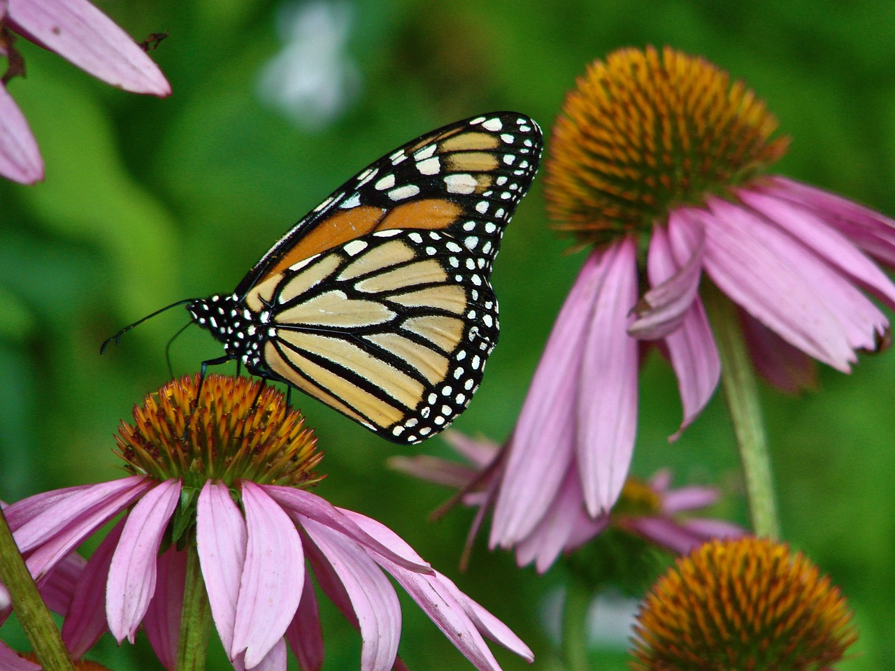
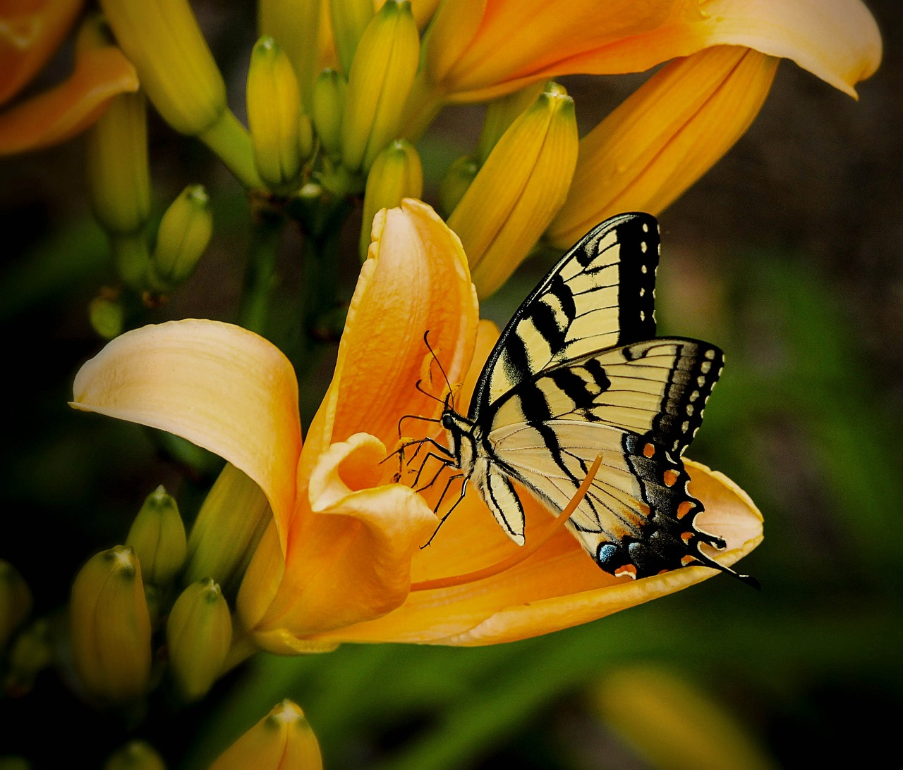
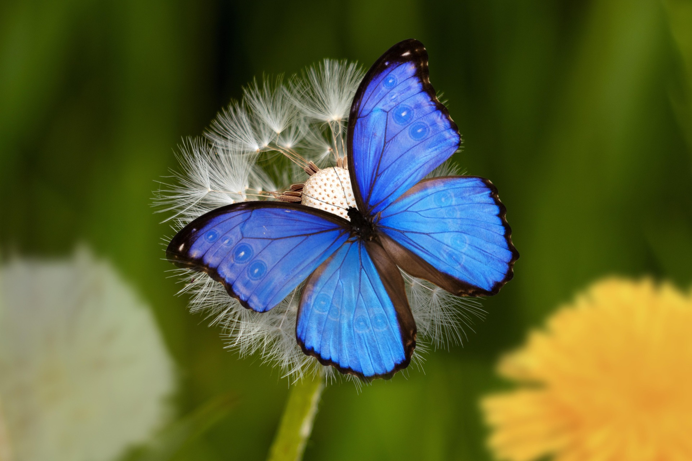

Monarch Butterfly
The monarch butterfly is known by scientists as Danaus plexippus, which in Greek literally means "sleepy transformation." The name evokes the species' ability to hibernate and metamorphize.
Swallowtail Butterfly
Certain species of swallowtail practice Batesian mimicry; their appearance can closely resemble other butterfly species that predators find distasteful. Some swallowtail caterpillars eat plants that contain toxic defense chemicals and integrate these compounds into their bodies to prevent being eaten.
Morpho Butterfly
Their vivid, iridescent blue coloring is a result of the microscopic scales on the backs of their wings, which reflect light. The underside of the morpho's wings, on the other hand, is a dull brown color with many eyespots, providing camouflage against predators such as birds and insects when its wings are closed.